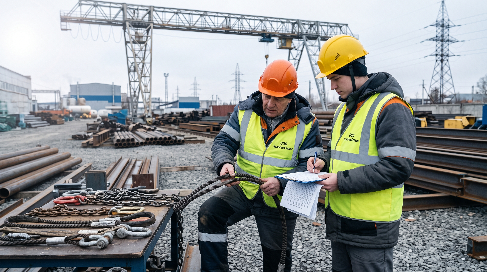

Когда менять канат и строп, кто осматривает и как вести журнал.

Канат и строп — это расходные элементы, которые со временем теряют прочность. Их нельзя эксплуатировать «до последнего» — при достижении браковочных показателей их нужно менять. В этой статье — основные нормы браковки.
Канат бракуется при:
Стропы бывают канатные, цепные и текстильные. У каждого — свои нормы:
Стропы осматривает работник, назначенный ответственным за содержание грузоподъёмных кранов в исправном состоянии. Периодичность:
Результаты осмотра заносятся в журнал учёта и осмотра съёмных грузозахватных приспособлений.
Повреждённые стропы и канаты изымаются из работы. Их нельзя оставлять в местах производства работ. Если канат или строп признан негодным — его утилизируют или передают на ремонт (только цепные).
Браковка канатов и стропов — это не «перестраховка», а требование промышленной безопасности. Своевременная замена изношенного элемента стоит копейки по сравнению с последствиями обрыва под нагрузкой. Если сомневаетесь в состоянии каната или стропа — замените его.
Заполните форму — мы свяжемся с вами и рассчитаем стоимость работ. Ответим в течение 1 рабочего дня.